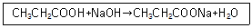
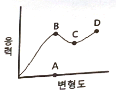
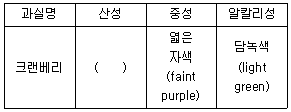
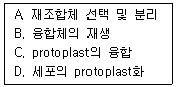
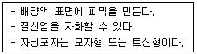
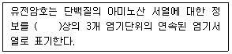

식품기사 (2021-05-15 기출문제)
1과목: 식품위생학
1. 곰팡이독증(mycotoxicosis)의 특징에 대한 설명으로 옳은 것은?
- 단백질이 풍부한 축산물을 섭취하면 일어날 수 있다.
- 원인식품에서 곰팡이의 오염증거 또는 흔적이 인정된다.
- 모든 곰팡이독증에는 항생물질이나 약제요법을 실시하면 치료의 효과가 있다.
- 감염형이기 때문에 사람과 사람 사이에서 직접 감염된다.
(정답률: 84%)

2. 유지 산화방지제의 일반적인 특성으로 옳은 것은?
- 카보닐화합물 생성 억제
- 아미노산 생성 억제
- 지방산의 생성 억제
- 유기산의 생성 억제
(정답률: 61%)
3. 감염병과 그 병원체의 연결이 틀린 것은?
- 유행성출혈열: 세균
- 돈단독: 세균
- 광견병: 바이러스
- 일본뇌염: 바이러스
(정답률: 65%)
4. HACCP에 관한 설명으로 틀린 것은?
- 위해분석(hazard analysis)은 위해가능성이 있는 요소를 찾아 분석ㆍ평가하는 작업이다.
- 중요관리점(critical control point) 설정이란 관리가 안 될 경우 안전하지 못한 식품이 제조될 가능성이 있는 공정의 결정을 의미한다.
- 관리기준(critical limit)이란 위해분석 시 정확한 위해도 평가를 위한 지침을 말한다.
- HACCP의 7개 원칙에 따르면 중요관리점이 관리기준 내에서 관리되고 있는지를 확인하기 위한 모니터링 방법이 설정되어야 한다.
(정답률: 74%)
5. 분변검사로 충란을 검출할 수 없는 기생충은?
- 유극악구충
- 간흡충
- 민촌충
- 구충
(정답률: 62%)
6. 아래의 반응식에 의한 제조방법으로 만들어지는 식품첨가물명과 주요 용도를 옳게 나열한 것은?

- 카복시메틸셀룰로스나트륨 - 증점제
- 스테아릴젖산나트륨 - 유화제
- 차아염소산나트륨 - 합성살균제
- 프로피온산나트륨 – 보존료
(정답률: 71%)
7. 식품의 안전관리에 대한 사항으로 틀린 것은?
- 작업장내에서 작업중인 종업원 등은 위생복ㆍ위생모ㆍ위생화 등을 항시 착용하여야 하며, 개인용 장신구 등을 착용하여서는 아니 된다.
- 식품 취급 등의 작업은 바닥으로부터 60cm이상의 높이에서 실시하여 바닥으로부터의 오염을 방지하여야 한다.
- 칼과 도마 등의 조리 기구나 용기, 앞치마, 고무장갑 등은 원료나 조리과정에서의 교차오염을 방지하기 위하여 식재료 특성 또는 구역별로 구분하여 사용하여야 한다.
- 해동된 식품은 즉시 사용하고 즉시 사용하지 못할 경우 조리 시까지 냉장 보관하여야 하며, 사용 후 남은 부분은 재동결하여 보관한다.
(정답률: 91%)
8. 페놀프탈레인시액 규정은?
- 페놀프탈레인 1g을 에탄올 10mL에 녹인다.
- 페놀프탈레인 1g을 에탄올 100mL에 녹인다.
- 페놀프탈레인 1g을 에탄올 1000mL에 녹인다.
- 페놀프탈레인 1g을 에탄올 10000mL에 녹인다.
(정답률: 82%)
9. 부식되지 않고 열전도성이 좋지만, 습기나 이산화탄소가 많은 곳에서는 산가용성의 녹청(綠靑)이 형성되어 위생상의 위해를 초래할 수 있는 금속제 용기 재료는?
- 납(Pb)
- 구리(Cu)
- 카드뮴(Cd)
- 알루미늄(Al)
(정답률: 74%)
10. 반감기는 짧으나 젖소가 방사능 강하물에 오염된 사료를 섭취할 경우 쉽게 흡수되어 우유에서 바로 검출되므로 우유를 마실 때 가장 문제가 될 수 있는 방사성 물질은?
- 89Sr
- 90Sr
- 137Cs
- 131I
(정답률: 78%)
11. 3,4-benzopyrene에 대한 설명 중 틀린 것은?
- 식품 중에는 직화로 구운 고기에만 존재한다.
- 다핵 방향족 탄화수소이다.
- 발암성 물질이다.
- 대기오염 물질 중의 하나이다.
(정답률: 84%)
12. 식품의 방사선 살균에 대한 설명으로 틀린 것은?
- 침투력이 강하므로 포장 용기 속에 식품이 밀봉된 상태로 살균할 수 있다.
- 조사 대상물의 온도 상승 없이 냉살균(cold sterilization)이 가능하다.
- 방사선 조사한 식품의 살균 효과를 증가시키기 위해 재조사한다.
- 식품에는 감마선을 사용한다.
(정답률: 89%)
13. 식물성 식중독의 원인성분과 식품의 연결이 틀린 것은?
- 솔라닌(solanine) - 감자
- 아미그달린(amygdalin) - 청매
- 무스카린(muscarine) - 버섯
- 셉신(sepsin) - 고사리
(정답률: 84%)
14. 트리할로메탄(trihalomethane)에 대한 설명으로 틀린 것은?
- 수도용 원수의 염소 처리 시에 생성되며 발암성 물질로 알려져 있다.
- 생성량은 물속에 있는 총유기성 탄소량에는 반비례하나 화학적 산소요구량과는 무관하다.
- 메탄의 4개 수소 중 3개가 하로겐 원자로 치환된 것이다.
- 전구물질을 제거하거나 생성된 것을 활성탄등으로 처리하여 제거할 수 있다.
(정답률: 84%)
15. 다음 식중독 세균과 주요 원인식품의 연결이 부적합한 것은?
- 병원성 대장균 - 생과일주스
- 살모넬라균 - 달걀
- 클로스트리디움 보툴리눔 - 통조림식품
- 바실러스 세레우스 – 생선회
(정답률: 75%)
16. 인수공통병원균으로 냉장온도에서도 생존하여 증식할 수 있으며, 소량의 균으로도 발병이 가능한 식중독균은?
- Vibrio parahaemolyticus
- Staphylococcus aureus
- Bacillus cereus
- Listeria monocytogenes
(정답률: 71%)
17. 식품미생물의 성장에 영향을 미치는 내적인자와 거리가 먼 것은?
- 수분활성도
- pH
- 산화환원전위(redox)
- 상대습도
(정답률: 69%)
18. 일반적으로 식품의 초기부패 단계에서 나타나는 현상이 아닌 것은?
- 불쾌한 냄새가 발생하기 시작한다.
- 퇴색, 변색, 광택 소실을 볼 수 있다.
- 액체인 경우 침전, 발포, 응고현상이 나타난다.
- 단백질분해가 시작되지만 총균수는 감소한다.
(정답률: 92%)
19. HACCP의 일반적인 특성에 대한 설명으로 옳은 것은?
- 사고 발생 시 역추적이 불가능하여 사전적 예방의 효과만 있다.
- 식품의 HACCP수행에 있어 가장 중요한 위험요인은 통상적으로 “물리적＞화학적＞생물학적” 요인 순이다.
- 공조시설계통도나 용수 및 배관처리계통도 상에서는 폐수 및 공기의 흐름 방향까지 표시되어야 한다.
- 제품설명서에 최종제품의 기준ㆍ규격작성은 반드시 식품공전에 명시된 기준ㆍ규격과 동일하게 설정하여야 한다.
(정답률: 71%)
20. 주요 용도가 산도조절제가 아닌 것은?
- sorbic acid
- lactic acid
- acetic acid
- citric acid
(정답률: 62%)
2과목: 식품화학
21. Colloid 용액에 빛을 비추면 그 빛의 진로가 뚜렷하게 보이는 교질 용액의 성질은?
- 반투성
- 브라운 운동
- Tyndall 현상
- 흡착
(정답률: 71%)
22. 1g의 어떤 단당류 화합물을 20mL의 메탄올에 용해시킨 후 10cm 두께의 편광기에 넣고 광회전도를 측정하였더니 (+) 5.0°가 나왔다. 이 화합물의 고유 광회전도는?
- (-) 100°
- (-) 50°
- (+) 50°
- (+) 100°
(정답률: 60%)
23. 물과의 친화력이 가장 큰 반응 그룹은?
- 수산화기(-OH)
- 알데히드기(-CHO)
- 메틸기(-CH3)
- 페닐기(-C6H5)
(정답률: 83%)
24. 과일을 저장하면서 호흡량의 Q10 값과 해당온도에서의 호흡량의 차이를 비교하였다. 똑같은 조건하에서 온도를 10℃ 올린다면 가장 많은 호흡량을 보이는 것은?
- Q10=2.2 인 것
- Q10=1.8 인 것
- 12℃에서 100mL/kg/h 이던 것이 22℃에서 150mL/kg/h인 것
- 14℃에서 110mL/kg/h 이던 것이 34℃에서 260mL/kg/h인 것
(정답률: 66%)
25. 고구마 절단 시 나오는 흰색 유액의 특수성분은?
- 사포닌(saponin)
- 잘라핀(jalapin)
- 솔라닌(solanine)
- 이눌린(inulin)
(정답률: 78%)
26. 색소 성분의 변화에 대한 설명 중 틀린 것은?
- 클로로필은 가열이나 약산 처리 시 Mg이온이 수소로 치환되어 청록색의 pheophorbide가 된다.
- Myoglobin은 햄, 소시지와 같은 염지육에서는 nitrosomyoglobin으로 된다.
- Myoglobin이 되고 익힌 육류의 색은 metmyoglobin에 의해 유발된다.
- Carotenoids는 광선에 매우 민감하나, 이 예민도는 산소의 존재 유무에 따라 달라진다.
(정답률: 57%)
27. 유지의 중성지질에 붙어 있는 지방산을 가스크로마토그래피(GC)를 활용하여 분석할 때 유지의 처리 방법은?
- 중성지질을 아세톤 용매에 희석한 후 바로 주사기를 이용하여 GC에 주입한다.
- 중성지질을 비누화하여 유리지방산을 제거한 후 GC에 주입한다.
- 중성지질에 직접 에틸기를 붙여 GC에 주입한다.
- 중성지질을 지방산 메틸에스터로 유도체화시킨 후 GC에 주입한다.
(정답률: 70%)
28. 두류 식품의 제한아미노산으로 문제 시 되는 것은?
- 메티오닌(methionine)
- 라이신(lysine)
- 아르기닌(arginine)
- 트레오닌(threonine)
(정답률: 71%)
29. 단백질 변성(denaturation)에 대한 설명으로 틀린 것은?
- 단백질 변성이란 단백질 구조 중 1, 2, 3차 구조가 외부의 자극에 의해 변화되는 현상이다.
- 염류에 의한 단백질 변성의 예는 콩단백질로 두부를 제조하는 것이다.
- 우유 단백질인 casein이 치즈 제조에 활용되는 원리는 일종의 산(acid)에 의한 단백질 변성이다.
- 육류를 장시간 가열하면 결합조직인 collagen이 변성되어 gelatin이 된다.
(정답률: 63%)
30. GC와 HPLC에 대한 설명으로 틀린 것은?
- GC는 주로 휘발성 물질의 분석에, HPLC는 비휘발성 물질의 분석에 활용된다.
- GC는 이동상이 기체이고, HPLC는 이동상이 액체이다.
- HPLC는 GC보다 시료 회수가 어렵다.
- 일반적으로 GC의 민감도가 HPLC보다 높다.
(정답률: 82%)
31. 유지 산패의 측정 방법이 아닌 것은?
- 과산화물값 측정
- TBA 값 측정
- 비누화값 측정
- 총 carbonyl 화합물 함량 측정
(정답률: 71%)
32. 채소류는 데치기 공정(blanching)을 하면 보통 색깔이 진해지지만 지나치게 가열하거나 산으로 처리하였을 경우에는 갈색으로 변한다. 이런 경우 다음 중 어느 것을 첨가하면 색이 변하는 것을 방지할 수 있는가?
- 탄산마그네슘
- 황산암모늄
- 염화칼슘
- 수산화나트륨
(정답률: 50%)
33. 다음의 그림에서 항복점(yield point)은 어느 것인가?

- A
- B
- C
- D
(정답률: 74%)
34. 조직감(texture)의 특성에 대한 설명으로 틀린 것은?
- 견고성(경도)은 일정 변형을 일으키는데 필요한 힘의 크기다.
- 응집성은 물질이 부서지는데 드는 힘이다.
- 점성은 흐름에 대한 저항의 크기다.
- 접착성은 식품의 표면과 다른 물체의 표면이 부착되어 있는 것을 떼어내는데 필요한 힘이다.
(정답률: 83%)
35. 검화될 수 없는 지방질(unsaponifiable lipids)에 속하는 성분은?
- 트리스테아린(tristearin)
- 토코페롤(tocopherol)
- 세레브로사이드(cerebroside)
- 레시틴(lecithin)
(정답률: 57%)
36. 액체 상태의 유지를 고체 상태로 변환시켜 쇼트닝을 만들거나, 유지의 산화안정성을 높이기 위해 사용하는 가공 방법은?
- 경화
- 탈검
- 탈색
- 여과
(정답률: 87%)
37. Anthocyanins와 관련된 과실의 색깔 변화표에서 ( )안에 알맞은 것은?

- 빨간색(red)
- 자색(purple)
- 녹색(green)
- 청색(blue)
(정답률: 79%)
38. 지방산화에 대한 설명 중 옳은 것은?
- 자동산화는 free radical chain reaction이라고 불리며 라디칼 형태로 된 포화지방이 삼중항산소와 결합하는 반응이다.
- 일중화산소는 삼중항산소로부터 생성될 수 있으며 비라디칼 형태이기에 불포화 지방산과 쉽게 반응 가능하다.
- 지방산화를 촉진하는 효소 중 하나인 리폭시게나아제(lipoxygenase)는 주로 올레산(oleic acid)을 산화시킨다.
- 변향(reversion flavor)은 콩기름과 같이 올레산이 많은 유지에서 풀냄새나 콩비린내가 나는 현상을 지칭한다.
(정답률: 42%)
39. 식품의 텍스처 특성과 일반적인 표현의 연결이 옳은 것은?
- 저작성(chewiness): 무르다, 단단하다
- 부착성(adhesiveness): 미끈미끈하다, 끈적끈적하다
- 응집성(cohesiveness): 기름지다, 미끈미끈하다
- 견고성(hardness): 부스러지다, 깨지다
(정답률: 66%)
40. 단순단백질로 난백에 많고, 물에 잘 녹는 혈액의 중요한 단백질은?
- prolamin
- chromoprotein
- phosphoprotein
- albumin
(정답률: 86%)
3과목: 식품가공학
41. 마요네즈에 대한 설명으로 틀린 것은?
- 마요네즈는 유백색이며, 기포가 없고, 내용물이 균질하여야 한다.
- 식용유의 입자가 큰 것일수록 점도가 높고 안정도도 크다.
- 유탁의 조직 점도와 함께 조미료와 향신료의 배합에 의한 풍미는 마요네즈의 품질을 좌우한다.
- 마요네즈는 oil in water(O/W)의 유탁액이다.
(정답률: 81%)
42. 쌀을 고압으로 가열 후 급히 분출시켜 팽창시켜 제조한 쌀 가공품은?
- 파보일드 쌀(parboiled rice)
- 팽화 쌀(puffed rice)
- α-쌀(alpha rice)
- 피복 쌀(premixed rice)
(정답률: 82%)
43. 콩단백의 기능적 특성과 콩을 재료로 하는 식품의 이용 관계에 대한 설명 중 틀린 것은?
- 콩단백의 점성으로 응고되는 성질을 이용하여 두부를 제조함
- 콩단백의 흡수성을 이용하여 식물성 소시지를 제조함
- 콩단백의 유화성을 이용하여 빵을 제조함
- 콩단백의 기포성을 이용하여 케이크를 제조함
(정답률: 51%)
44. 동물 근육의 사후경직 과정 중 최고의 경직을 나타내는 산성 상태일 때의 pH(ultimate acidity pH)는 약 얼마인가?
- 6.0
- 5.4
- 4.6
- 3.5
(정답률: 63%)
45. 유지에 수소를 첨가하는 주요 목적이 아닌 것은?
- 안정성을 높임
- 불포화지방산에 기인한 냄새를 제거함
- 융점을 높임
- 유리지방산을 제거함
(정답률: 67%)
46. 압력 101.325kPa(1atm)에서 25℃의 물 2kg을 100℃의 수증기로 변화시키는 데 필요한 엔탈피 변화는? (단, 물의 평균비열은 4.2kJ/kgㆍK이고, 100℃에서 물의 증발잠열은 2257kJ/kg이다.)
- 315kJ
- 630kJ
- 2572kJ
- 5144kJ
(정답률: 52%)
47. 고기의 연화제로 많이 쓰이는 효소는?
- 리파아제(lipase)
- 아밀라아제(amylase)
- 인버타아제(invertase)
- 파파인(papain)
(정답률: 83%)
48. 식품 저장 시 방사선 조사에 의한 효과가 아닌 것은?
- 곡류 식품의 살충
- 과실, 채소, 육류 식품의 살균
- 감자, 양파 등의 발아 촉진
- 과실, 채소 등의 숙도 조정
(정답률: 80%)
49. 과실을 주스로 가공할 때 주의점 및 특성에 대한 설명으로 틀린 것은?
- 색깔이 가공 중에 변하지 않게 한다.
- 살균은 고온살균이 적합하다.
- 비타민의 손실이 적도록 한다.
- 과일 중의 유기산은 금속 화합물을 잘 만들므로 용기의 금속재료에 주의한다.
(정답률: 85%)
50. 알루미늄박(Al-foil)에 폴리에틸렌 필름을 입혀서 사용하는 가장 큰 목적은?
- 산소나 가스의 차단
- 내유성 향상
- 빛의 차단
- 열접착성 향상
(정답률: 67%)
51. 제면 제조에서 소금을 사용하는 목적이 아닌 것은?
- 미생물에 의한 발효를 촉진하기 위해서
- 밀가루의 점탄성을 높이기 위해서
- 수분이 내부로 확산하는 것을 촉진하기 위해서
- 제품의 품질을 안정시키기 위해서
(정답률: 73%)
52. 가열 살균할 때 냉점이 통의 중심부에 가장 근접하여 위치하는 것은?
- 사과 주스 통조림
- 쇠고기 스프 통조림
- 복숭아 통조림
- 딸기잼 통조림
(정답률: 53%)
53. 간장이나 된장 등의 장류 제조 시 코지(koji)를 사용하는 주된 이유는?
- 단백질이나 전분질을 분해시킬 수 있는 효소 활성을 크게 하기 위하여
- 식중독균의 발육을 억제하기 위하여
- 색깔을 향상시키기 위하여
- 보존성을 향상시키기 위하여
(정답률: 82%)
54. 전분에서 fructose를 제조할 때 사용되는 효소는?
- pectinase
- cellulase
- α-amylase
- protease
(정답률: 69%)
55. 감의 탈삽법으로 과실의 손상이 적고 저장성이 좋으며 대량처리가 쉬운 방법은?
- 탄산가스법
- 알코올법
- 온탕법
- 동결법
(정답률: 72%)
56. 요구르트 제조 시 한천이나 젤라틴을 사용하는 주된 이유는?
- 우유 단백질인 casein의 열 안전성 증대를 위하여
- 유청(whey)이 분리되는 것을 방지하고, 커드(curd)를 굳히기 위하여
- 감미와 풍미 향상을 위하여
- 유산균 발효 시 영양성분 공급을 위하여
(정답률: 77%)
57. 다음 중 갈조류가 아닌 것은?
- 김
- 톳
- 미역
- 다시마
(정답률: 74%)
58. 식용유지의 제조과정에서 탈색에 대한 설명으로 틀린 것은?
- 원유 중에 카로티노이드, 엽록소 및 기타 색소류를 제거한다.
- 주로 화학적 방법으로 색소류를 열분해하여 제거한다.
- 활성백토, 활성탄소를 사용하여 흡착 제거한다.
- 탈산 과정을 거친 후에 탈색하는 것이 일반적이다.
(정답률: 53%)
59. 습윤공기의 압력이 100kPa이고, 절대습도가 0.03(kg수분/kg 건조공기)일 때, 수증기의 분압을 구하면 약 얼마인가? (단, 공기와 물의 분자량은 각각 29kg/mol과 18kg/mol이다.)
- 2.8kPa
- 3.8kPa
- 4.6kPa
- 5.6kPa
(정답률: 37%)
60. 다음 중 우유의 단백질은?
- ovalbumin
- lactalbumin
- glutenin
- oryzenin
(정답률: 75%)
4과목: 식품미생물학
61. 식품을 통해 사람에게 전염되는 세균성 이질의 원인균은?
- Enterobacter
- Salmonealla
- Shigella
- Klebsiella
(정답률: 73%)
62. 빛에너지와 CO2를 이용하는 미생물의 종류는?
- 광독립영양균(photoautotrophs)
- 화학독립영양균(chemoautotrophs)
- 광종속영양균(photoheterotrophs)
- 화학종속영양균(chemoheterotrophs)
(정답률: 71%)
63. 세포융합(cell fusion)의 유도절차가 순서대로 바르게 된 것은?

- A→B→C→D
- D→C→B→A
- C→D→B→A
- B→C→A→D
(정답률: 76%)
64. 식품공장의 파아지(phage) 대책으로 부적합한 것은?
- 살균을 철저히 하여 예방한다.
- 온도, pH 등의 환경조건을 바꾸어 파아지(phage) 증식을 억제한다.
- 숙주를 바꾸는 rotation system을 실시한다.
- 항생물질의 저농도에 견디고 정상발효를 하는 내성균을 사용한다.
(정답률: 57%)
65. 접합균류(Zygomycetes)가 아닌 것은?
- Mucor 속
- Rhizopus 속
- Phycomyces 속
- Aspergillus 속
(정답률: 55%)
66. Mucor속 중 cymomucor형에 해당하는 것은?
- Mucor rouxii
- Mucor mucedo
- Mucor hiemalis
- Mucor racemosus
(정답률: 66%)
67. 아미노산으로부터 아민(amine)을 생성하는데 관여하는 효소는?
- Amino acid decarboxylase
- Amino acid oxidase
- Aminotransferase
- Aldolase
(정답률: 65%)
68. 대장균은 포도당을 어떤 수송 기작(transport system)에 의해 세포막을 통과시켜 세포 내로 섭취하는가?
- 수동적 수송(passive transport)
- 촉진확산(facilitated diffusion)
- 능동수송(active transport)
- 인산기 전달수송(group translocation)
(정답률: 44%)
69. 아래의 설명에 해당하는 효모는?

- Schizosaccharomyces 속
- Hansenula 속
- Debaryomyces 속
- Saccharomyces 속
(정답률: 60%)
70. 다음 중 그람 염색 특성이 나머지 세 가지 세균과 다른 하나는?
- Lactobacillus 속
- Staphylococcus 속
- Escherichia 속
- Bacillus 속
(정답률: 60%)
71. 박테리오파아지(bacteriophage)를 매개체로 하여 DNA를 옮기는 유전자 재조합 기술은?
- 형질전환(transformation)
- 형질도입(transduction)
- 접합(conjugation)
- 플라스미드(plasmid)
(정답률: 65%)
72. 흑색 균총을 형성하는 흑국균으로, 여러 가지 효소와 구연산 생산능을 가지고 있는 곰팡이는?
- Aspergillus flavus
- Aspergillus niger
- Aspergillus oryzae
- Aspergillus ochraceus
(정답률: 82%)
73. 세균포자의 설명 중 가장 적합한 것은?
- 영양세포보다 저항성이 강하다.
- 단순한 층으로 싸여 있다.
- 영양세포의 대사활동이 매우 활발할 때 형성된다.
- 그람(Gram) 음성균에서만 형성된다.
(정답률: 59%)
74. 그람 양성균의 세포벽 성분은?
- peptidoglycan, teichoic acid
- lipopolysaccharide, protein
- polyphosphate, calcium dipicholinate
- lipoprotein, phosphilipid
(정답률: 80%)
75. Bacillus subtilis(1개)가 30분마다 분열한다면 5시간 후에는 몇 개가 되는가?
- 10
- 512
- 1024
- 2048
(정답률: 84%)
76. 미생물과 그 이용에 대한 설명의 연결이 잘못된 것은?
- Bacillus subtilis – 단백분해력이 강하여 메주에서 번식한다.
- Aspergillus oryzae – amylase와 protease활성이 강하여 코지(koji)균으로 사용된다.
- Propionibacterium shermanii – 치즈눈을 형성시키고, 독특한 풍미를 내기 위하여 스위스 치즈에 사용된다.
- Kluyveromyces lactis – 내염성이 강한 효모로 간장의 후숙에 중요하다.
(정답률: 67%)
77. 맥주 발효 시 ㉠상면발효 효모와 ㉡하면발효 효모를 모두 옳게 나열한 것은?
- ㉠ Saccharomyces carlsbergensis ㉡ Saccharomyces cerevisiae
- ㉠ Saccharomyces cerevisiae ㉡ Saccharomyces carlsbergensis
- ㉠ Saccharomyces rouxii ㉡ Saccharomyces cerevisiae
- ㉠ Saccharomyces ellipsoideus ㉡ Saccharomyces cerevisiae
(정답률: 76%)
78. 미생물의 명명법에 관한 설명 중 틀린 것은?
- 종명은 라틴어의 실명사로 쓰고 대문자로 시작한다.
- 학명은 속명과 종명을 조합한 2명법을 사용한다.
- 세균과 방선균은 국제세균명명규약에 따른다.
- 속명 및 종명은 이탤릭체로 표기한다.
(정답률: 70%)
79. 유당(lactose)을 발효하여 알코올을 생성하는 효모는?
- Saccharomyces 속
- Kluyveromyces 속
- Candida 속
- Pichia 속
(정답률: 40%)
80. Aspergillus niger가 생산하는 효소가 아닌 것은?
- 옹유효소(rennet)
- 아밀라아제(a-amylase)
- 단백분해효소(protease)
- 포도당산화효소(glucose oxidase)
(정답률: 67%)
5과목: 생화학 및 발효학
81. 산화에 의한 생체막의 손상을 억제하며, 대표적인 항산화제로 이용되는 비타민은?
- 비타민 A
- 비타민 B
- 비타민 D
- 비타민 E
(정답률: 79%)
82. 연속식 배양법에 대한 설명으로 틀린 것은?
- 전체 공정의 관리가 용이하여 대부분의 발효공업에서 적용되고 있다.
- 중간 및 최종제품의 품질이 일정하다.
- 배양 중 잡균에 의한 오염이나 변이의 가능성이 있다.
- 수율 및 생산물 농도는 일반적으로 회분식에 비해 낮다.
(정답률: 46%)
83. TCA 회로에 관여하는 조절효소(regulatory enzyme)가 아닌 것은?
- Citrate synthase
- Isocitrate dehydrogenase
- α-Ketoglutarate dehydrogenase
- Phosphoglucomutase
(정답률: 61%)
84. 해당과정 중 ATP를 생산하는 단계는 어떤 반응인가?
- Glucose→Glucose-6-phosphate
- 2-Phosphoenol pyruvic acid→Enolpyruvic acid→Enolpyruvic acid
- Fructose-6-phosphate→Fructose-1,6-diphosphate
- Glucose-6-phosphate→Fructose-6-phosphate
(정답률: 57%)
85. 균체내 효소를 추출하는 방법으로 부적합한 것은?
- 초음파 파쇄법
- 기계적 마쇄법
- 염석법
- 동결 융해법
(정답률: 63%)
86. 포도주 제조 시 Maloalcoholic fermentation인란?
- succinic acid를 첨가하여 malic acid를 생산시키는 것이다.
- malic acid에서 alcohol과 탄산가스를 생성시키는 것이다.
- malic acid를 분해하여 젖산과 탄산가스로 분해되는 현상이다.
- succinic acid로 부터 alcohol과 탄산가스를 생성시키는 것이다.
(정답률: 60%)
87. Peptide 생합성 반응과 단백질인자에 대한 설명이 옳은 것은?
- 개시반응: tRNA와 ribosome의 결합이 일어나며 EF단백인자가 관여
- 신장반응: ATP가 소모되며 IF 단백인자가 관여
- 종지반응: 아미노산 종지 codon은 AUG, GUG 및 UUU
- 종지반응: GTP가 필요하며 RF 단백인자가 관여
(정답률: 46%)
88. DNA 분자의 특징에 대한 설명으로 틀린 것은?
- DNA 분자는 두 개의 polynucleotide 사슬이 서로 마주보면서 나선구조로 꼬여있다.
- DNA 분자의 이중나선 구조에 존재하는 염기쌍의 종류는 A:T와 G:C로 나타난다.
- DNA 분자의 생합성은 3‘-말단→5’-말단 방향으로 진행된다.
- DNA 분자 내 이중나선 구조가 1회전하는 거리를 1피치(pitch)라고 한다.
(정답률: 78%)
89. 술덧의 전분 함량 16%에서 얻을 수 있는 탁주의 알코올 도수는?
- 약 8도
- 약 20도
- 약 30도
- 약 40도
(정답률: 72%)
90. 당분해(glycolysis)에 관여하는 효소 중에는 보조인자(cofactor)로써 화학성분(금속이온 등)을 필요로 하는 효소도 있다. 이와 같은 효소의 단백질 부분을 무엇이라 하는가?
- 아포효소(apoenzyme)
- 보조효소(coenzyme)
- 완전효소(holoenzyme)
- 보결분자단(prosthetic group)
(정답률: 48%)
91. 아래의 유전암호(genetic code)에 대한 설명에서 ( )안에 알맞은 것은?

- DNA
- mRNA
- tRNA
- rRNA
(정답률: 64%)
92. 안티-코돈(anti-Codon)을 가지고 있는 핵산은?
- m-RNA
- t-RNA
- r-RNA
- c-DNA
(정답률: 62%)
93. 설탕용액에서 생장할 때 dextran을 생산하는 균주는?
- Leuconostoc mesenteroides
- Aspergillus oryzae
- Lactobacillus delbrueckii
- Rhizopus oryzae
(정답률: 61%)
94. Glutamic acid 발효에서 penicillin을 첨가하는 주된 목적 및 이유는?
- 세포벽의 안정화 및 잡균의 오염 방지
- 원료당의 흡수 증가
- 당으로부터 glutamic acid 생합성 경로에 있는 효소반응 촉진
- 균체 내에 생합성된 glutamic acid의 균체 밖으로의 이동을 위한 막투과성 증가
(정답률: 59%)
95. 진핵세포 내에서 전자전달 연쇄반응에 의한 생물학적 산화과정이 일어나는 곳은?
- 리보솜
- 미토콘드리아
- 세포막
- 세포질
(정답률: 73%)
96. 인간의 장내 미생물에 의해 합성이 진행되므로 일반적으로 결핍 증세를 나타내지는 않지만, 달걀 흰자를 날것으로 함께 섭취 시 결핍증이 우려되는 비타민은?
- Biotin
- Pathothenic acid
- Folic acid
- Niacin
(정답률: 79%)
97. 탁ㆍ약주의 발효방식으로 적합한 것은?
- 단발효
- 단행복발효
- 병행복발효
- 비당화발효
(정답률: 63%)
98. 알코올 증류에서 공비점(K점)에 대한 설명으로 틀린 것은?
- 알코올 농도는 97.2%이다.
- 99% 알코올을 비등 냉각하면 알코올 농도는 더욱 높아진다.
- 97.2%의 알코올 용액을 비등 냉각해도 알코올 농도는 불변이다.
- 공비점의 혼합물을 공비혼합물이라 한다.
(정답률: 68%)
99. 빵효모의 균체 생산 배양관리 인자가 아닌 것은?
- 온도
- pH
- 당 농도
- 혐기조건 유지
(정답률: 71%)
100. 산화적인산화반응(oxidative phosphorylation)에서 ATP가 합성되는 과정과 가장 거리가 먼 것은?
- MADH dehydrogenase/flavoprotein 복합체
- cytochrome a/a3 복합체
- fatty-acid synthetase 복합체
- cytochrome oxidase 복합체
(정답률: 61%)